<title>v0.12 Arsenal Art</title>
<meta name="claude:viewport-fit-sides" content="cover">
<link rel="preconnect" href="https://fonts.googleapis.com">
<link rel="stylesheet" href="https://fonts.googleapis.com/css2?family=Jersey+10&family=IBM+Plex+Sans:wght@400;600&display=swap">
<style>
/* Layout: one reading column of labelled sprite sheets on the game's charcoal, wide sheets scroll inside their frame. Single dark look on purpose: the art is judged against the in-game floor. */
:root {
  --bg: #15191e;
  --panel: #20262d;
  --edge: #323b45;
  --text: #e8edf2;
  --muted: #aab6c2;
  --gold: #f2c14e;
  --display: "Jersey 10", "Courier New", monospace;
  --body: "IBM Plex Sans", system-ui, sans-serif;
  color-scheme: dark;
}
body { background: var(--bg); color: var(--text); font: 15px/1.55 var(--body); }
main { max-width: 1180px; margin: 0 auto; padding-block: 28px 64px; padding-left: max(16px, env(safe-area-inset-left, 0px)); padding-right: max(16px, env(safe-area-inset-right, 0px)); display: grid; gap: 22px; }
h1, h2 { font-family: var(--display); font-weight: 400; letter-spacing: 0.02em; text-wrap: balance; margin: 0; }
h1 { font-size: 44px; line-height: 1; }
h2 { font-size: 28px; line-height: 1.1; }
p { margin: 0; max-width: 68ch; color: var(--muted); }
p strong { color: var(--text); font-weight: 600; }
.lede { display: grid; gap: 8px; }
section { background: var(--panel); border: 1px solid var(--edge); padding: 16px; display: grid; gap: 10px; min-width: 0; }
.sheet { overflow-x: auto; border: 1px solid var(--edge); background: var(--bg); }
.sheet img { display: block; max-width: none; height: auto; image-rendering: pixelated; }
.sheet img.fit { max-width: 100%; }
.stats { font-family: var(--display); font-size: 19px; color: var(--gold); letter-spacing: 0.03em; }
ol { margin: 0; padding-left: 22px; display: grid; gap: 8px; max-width: 74ch; }
ol li { color: var(--muted); }
ol li strong { color: var(--text); }
code { font-size: 13px; color: var(--text); }
.sounds { display: grid; grid-template-columns: repeat(auto-fill, minmax(260px, 1fr)); gap: 10px; }
.sounds figure { margin: 0; padding: 10px; border: 1px solid var(--edge); background: var(--bg); display: grid; gap: 6px; min-width: 0; }
.sounds figcaption { font-family: var(--display); font-size: 20px; color: var(--text); }
.sounds figcaption span { font-family: var(--body); font-size: 13px; color: var(--muted); margin-left: 6px; }
.sounds audio { width: 100%; }
</style>
<main>
  <div class="lede">
    <h1>v0.12 Arsenal art</h1>
    <p>The six new units and two new producers, drawn by code in <code>RenderGen</code> in the same lit look as the Tank and HQ, shown in the game's pixel finish (64 px per tile). Blue and red are player colours 1 and 2. Nothing is in the game's atlases yet: once you approve, the sprites go into the build.</p>
  </div>

  <section>
    <h2>In game, 1:1</h2>
    <p>The v0.7 sample map with the HQ, the Barracks, the Siege Workshop (right of the HQ) and the Heavy Factory (below it), and two mixed armies. The Heavies and Artillery take a 2×2 spot.</p>
    <div class="sheet">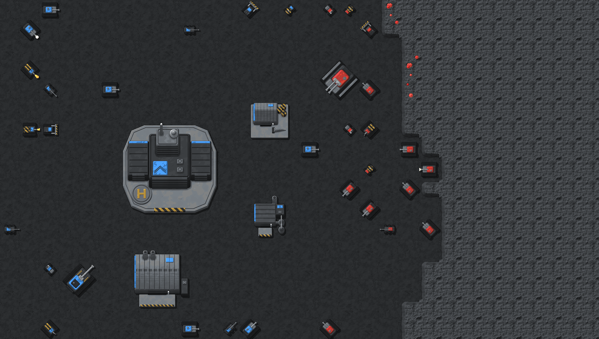</div>
  </section>

  <section>
    <h2>Units, 2×</h2>
    <p>Each row: the 8 facings, the second move frame, both action frames facing east, and a red one firing north-east. Scroll sideways in each strip. The Tank is first for scale.</p>
    <div class="stats">Tank · reference</div>
    <div class="sheet">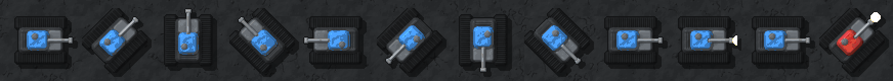</div>
    <div class="stats">Builder · redrawn as a bulldozer to match its icon; action frames work the blade</div>
    <div class="sheet">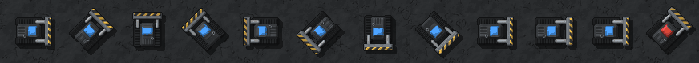</div>
    <div class="stats">Scout · light buggy with a sensor mast and a light gun</div>
    <div class="sheet">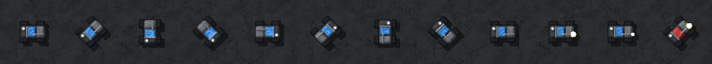</div>
    <div class="stats">Flamethrower · tracked, striped fuel tanks, flame jet</div>
    <div class="sheet">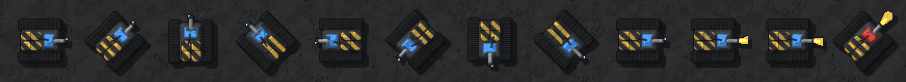</div>
    <div class="stats">Sniper · six-wheeled car, scope, very long barrel</div>
    <div class="sheet">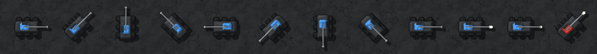</div>
    <div class="stats">Suicide bomber · cart with a striped explosive drum; action frames blink the armed lamp</div>
    <div class="sheet">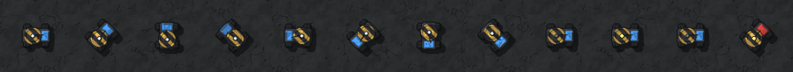</div>
    <div class="stats">Heavy · large class (2×2) · twin barrels, side skirts</div>
    <div class="sheet">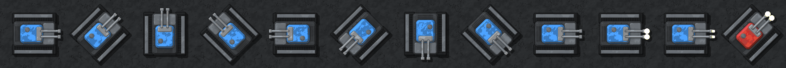</div>
    <div class="stats">Artillery · large class (2×2) · self-propelled gun, matching the approved icon</div>
    <div class="sheet">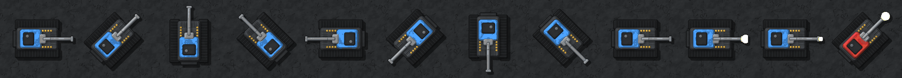</div>
  </section>

  <section>
    <h2>Buildings, 2×</h2>
    <p>Left to right: the <strong>Barracks</strong> (today's Spawner art, renamed), the <strong>Heavy Factory</strong> (3×3, vaulted hall, two chimneys, wide door onto a striped apron), the <strong>Siege Workshop</strong> (2×2, gabled shed, drill bit on a rack, explosive drums), both again in red (the workshop with its lamp off), and the Radar for scale.</p>
    <div class="sheet">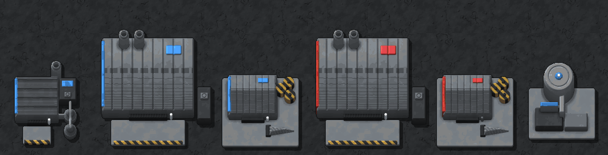</div>
  </section>

  <section>
    <h2>Effects, 2×</h2>
    <p>New <code>EffectGen</code> effects, each strip showing its frames in order. Tracers, shells and the flame are drawn turned to their heading in game.</p>
    <div class="stats">Sniper tracer · 1 frame · long white-hot streak with a heat trail</div>
    <div class="sheet">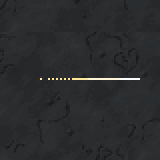</div>
    <div class="stats">Artillery shell · 2 frames · hot slug with a smoke trail</div>
    <div class="sheet">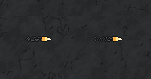</div>
    <div class="stats">Flame stream · 4 frames · 3 tiles long (2.5-tile range), stretched to the target</div>
    <div class="sheet">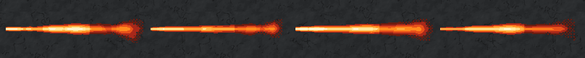</div>
    <div class="stats">Shell impact · 6 frames · 4×4 tiles (2-tile splash) · flash, shockwave ring, fireball, smoke</div>
    <div class="sheet">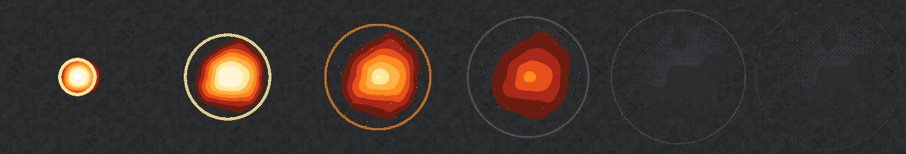</div>
    <div class="stats">Bomber blast · 8 frames · 4×4 tiles (2-tile blast) · the bomb's fireball, sized for the bomber</div>
    <div class="sheet">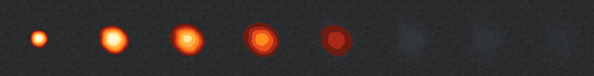</div>
  </section>

  <section>
    <h2>Sounds</h2>
    <p>New sfxr parameter sets in <code>Assets/Art/Audio/sfx/</code>, played through <code>AudioService</code> from the attack events the client already gets. The Tank shot and the bomb blast are here to compare.</p>
    <div class="sounds">
      <figure><figcaption>Tank shot <span>today</span></figcaption><audio id="a-tank" controls preload="none" src="sfx/shot_tank.wav"></audio></figure>
      <figure><figcaption>Scout shot <span>light, rapid</span></figcaption><audio id="a-scout" controls preload="none" src="sfx/shot_scout.wav"></audio></figure>
      <figure><figcaption>Flamethrower <span>fluttering roar</span></figcaption><audio id="a-flame" controls preload="none" src="sfx/shot_flamethrower.wav"></audio></figure>
      <figure><figcaption>Sniper shot <span>sharp crack</span></figcaption><audio id="a-sniper" controls preload="none" src="sfx/shot_sniper.wav"></audio></figure>
      <figure><figcaption>Heavy shot <span>heavy crack and boom</span></figcaption><audio id="a-heavy" controls preload="none" src="sfx/shot_heavy.wav"></audio></figure>
      <figure><figcaption>Artillery shot <span>big cannon, long tail</span></figcaption><audio id="a-artillery" controls preload="none" src="sfx/shot_artillery.wav"></audio></figure>
      <figure><figcaption>Shell impact <span>splash hit</span></figcaption><audio id="a-impact" controls preload="none" src="sfx/shell_impact.wav"></audio></figure>
      <figure><figcaption>Bomb blast <span>today</span></figcaption><audio id="a-bomb" controls preload="none" src="sfx/bomb_blast.wav"></audio></figure>
      <figure><figcaption>Bomber blast <span>a little tighter than the bomb</span></figcaption><audio id="a-bomber" controls preload="none" src="sfx/bomber_blast.wav"></audio></figure>
    </div>
  </section>

  <section>
    <h2>Decisions</h2>
    <ol>
      <li><strong>Approved (2026-10-17):</strong> the unit and producer art above. The Barracks keeps the Spawner art with no flag; the Builder is redrawn as a bulldozer. Its blade stripes now follow the blade in every facing (they ran along it at 45°); approved too.</li>
      <li><strong>Large units</strong> are drawn on 2×2 canvases (the 0.7-tile radius needs it). The unit renderer will draw them at twice the Tank's size when v0.12 is built.</li>
      <li><strong>Effects and sounds approved (2026-10-17):</strong> the five effects and seven sounds above. The bomber's blast has its own sound and a 4×4 fireball sized to its 2-tile blast; it could reuse the bomb's instead.</li>
    </ol>
  </section>
</main>
